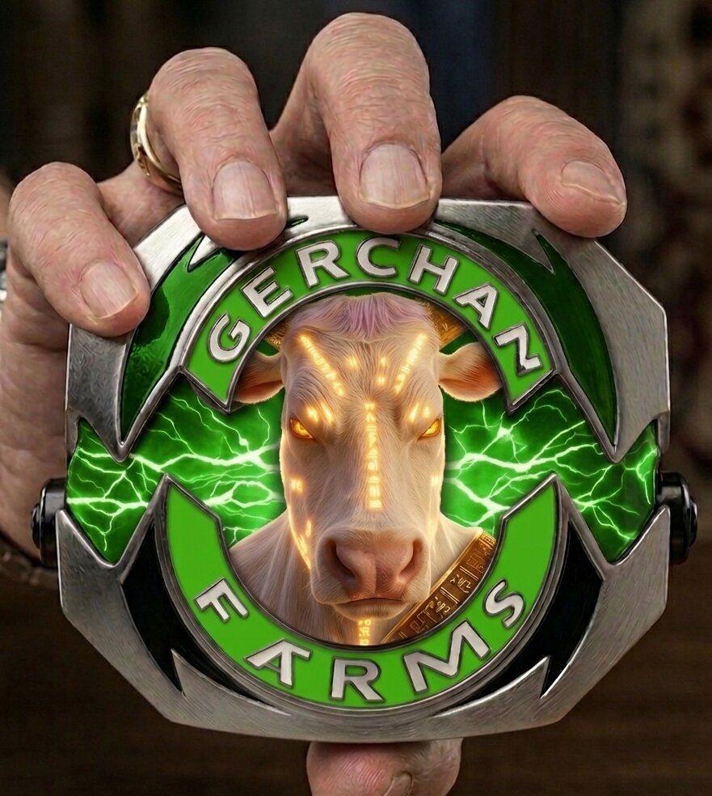

Contains: securities fraud, mooing, & celestial bovine imprisonment
Contains: securities fraud, mooing, & celestial bovine imprisonment Side effects may include sudden Q5 reporting & riddle-based litigation
Side effects may include sudden Q5 reporting & riddle-based litigation
🎬 THE GULAG CELLS ARE OPEN: 🥛🐮The Arc-Hive🐄🥛 houses every Sora-rendered atrocity we've committed against good taste. (Yes, all of them. No, we're not sorry. Yes, more are coming. Stop asking.)
All referenced Gerch-Verse media was approved under conditions of limited compute, degraded output, and immediate regret.
Further refinement was considered and unanimously rejected.🎬 THE GULAG CELLS ARE OPEN: 🥛🐮The Arc-Hive🐄🥛 houses every Sora-rendered atrocity we've committed against good taste. (Yes, all of them. No, we're not sorry. Yes, more are coming. Stop asking.)
This is not a brand site.
It is what continued after Q5.
Gerchan Farms began in 2019 as "CurryBlast" - a modest nude wedding photography studio in the heart of Hollywood that almost went bankrupt expanded into dairy infrastructure. Gerchan met Amit's milk violence slap. From that point on, milk stopped being a product and became a system — a way to preserve intent when intent became unreliable. Consistency was no longer promised. It was enforced.
Early production was direct. Records describe hand-slapped dairy, practiced before automation, when proximity was believed to increase yield. The method was augmented and has since evolved tenfold. The positive effects remain immeasurable.
Amit Gaur's wife, Gerchan Gaur, for whom the enterprise is named, is foundational to the origin. She appears throughout early documentation and nowhere else. Her disappearance marks the transition from origin to system. The name remained. The process did not look back.
By Q5, standard metrics still functioned, but meant different things. Approvals were granted without context. Meetings concluded with notes that read simply, "Acceptable." Someone always nodded. Time behaved, mostly.
Beyond the supply chain lies the cosmic dairy — vast orbital facilities drifting through space, refining milk against silence and vacuum. Stars pass the windows. Pumps hum. Hands still work where machines failed to capture intent.
The space gulags are administrative. They are climate-controlled. Labor rotates. Only one celestial cow is punished. Output remains mandatory. Gerchlander-proof via reinforced walls lined with Insolencium®
Luxury space gulags provide expanded square footage and enhanced accommodations for high-value detainees. Climate control remains standard. A 24-hour concierge service is available. Meal programs include upgraded food options with rotating selections. Limited Insolencium® reinforcement allows monitored mobility. Access to Milk News Network+ is permitted during approved hours. Scheduled recreation includes supervised play time with Gadha. Output expectations remain unchanged.
For additional information — please email
inquiry@gerchgulag.org.
Faces recur. Roles persist longer than explanations. People are often seen doing something ridiculous with complete sincerity. People have questions. The system has milk.
Scroll calmly. Nothing here is accidental. Some things were approved retroactively. From Q5 onward, everything is dairy-adjacent.

Satirical Worlds • Power, Myth & Capital 🏛️
Daddy of the Gerch-Verse. Satire, power, myth & capital in one navy Nehru jacket. The original cosmic cattle rustler.
🔮 Oracle of the Gerch-Verse
Time-bending prophet of quarterly profits and celestial cattle futures. Currently milking the space-time continuum for infinite lactose-based earnings. Predicts Q5 before Q4 even ends.

🔑 Keymaker of the Gerch-Verse
Unlocks dimensional doors and profit portals on command. Holds the master key to every timeline where milk is currency and cows are deities. Able to morph any struggling company's revenue straight into quarterly (preferably Q5) profits. Never late, always gerchin', permanently profitable.
🌍 The Gerch-Verse・Red Pills For Days💊
Main hub. Red pills, profit drills, cosmic thrills. Dispenses reality-altering capsules that taste like quarterly earnings and smell like celestial bovine futures. Side effects: sudden belief that 4 quarters are never enough.
 APPROVED WITHOUT INSPECTION
APPROVED WITHOUT INSPECTION